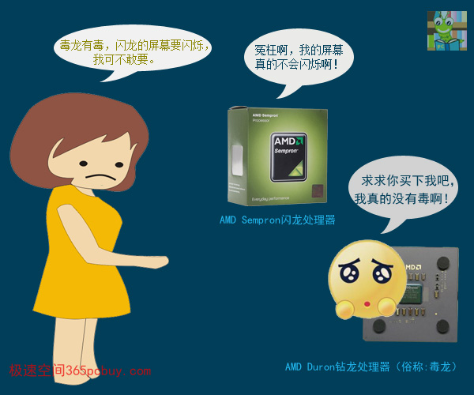
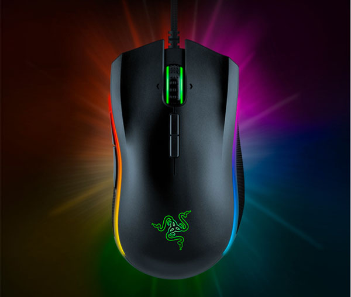
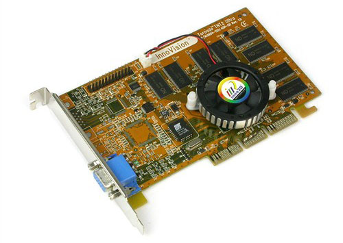

此文发表于2019年2月15日，大湿站长专为极速空间粉丝创作，部分来源于真实场景。
买电脑
某电脑商城，推销员知道今天AMD老总会来参观，精神百倍地向一大妈推销电脑。
“这台价格便宜，采用AMD毒龙处理器...“
大妈吓了一跳：”什么，有毒啊，不敢买。“
推销员：“只是名称是毒龙，实际不会有毒的”
大妈：“不吉利，换一种”
推销员：“那速龙如何？”
大妈：“”毒龙没毒，那速龙也肯定没有速度，换一个“
推销员：”那闪龙如何？“
大妈：”什么？闪龙，屏幕要闪烁啊？不敢买，换一个“
推销员：”那炫龙呢？“
大妈：”炫龙，要炫目，眼睛看了难受，不行，再换一个“
推销员：”那羿龙呢？”
大妈：“异龙？变异了的龙啊，更不敢要，换一个”
推销员快哭了：“霄龙呢？“
大妈：”嚣龙？这么嚣张我可不敢要，换一个“
推销员跪了：”锐龙行不行？“
大妈：”锐龙？有好锐利？会不会割手？“
旁边突然倒下一个人，大家一看是AMD老总，已经气得七窍生烟，瘫坐在地上，指着大妈说：“你......你......”

注：AMD从1999年发布速龙品牌后，处理器开始采用各种“龙”作为系列的区别，有毒龙、速龙、闪龙、羿龙、皓龙、霄龙、锐龙等，详见>>
把300元的鼠标藏起来
李师傅买了一只300多元曼巴眼镜蛇鼠标，过了两天又来了，”有没有最便宜的鼠标来一个，越撇越好！（注：撇，读：piè 四川话，意思是差）“
我们大惑不解，这不符合他的消费层次啊。”怎么了？“
李师傅气呼呼地说：”我们老婆看到鼠标上有蛇，不敢用，死活要换一个，她说看到蛇就要扔到外面垃圾桶，我就要给她来个撇的，看她怎么用。”
我们笑了：“那这个曼巴怎么办呢？”
李师傅一脸无奈：”没办法，只能暂时放在柜子里面藏起来。“

注：藏在自己家里其实也不保险，万一哪天老婆整理房间就发现了，最保险的办法是藏在不认识的人家里，这样就永远不会发现了。有不怕蛇，愿意收藏的举个爪爪。
辐射和炸弹
老张到电脑城买显卡，推销员热情地介绍：“大叔，这是ATI最新的镭256显卡.....”（注：即：Radeon 256显卡）
老张问：“雷？哪个雷？”
推销员：“就是左边一个金，右边一个打雷的雷，镭256”
老张惊愕失色：“镭？就是居里夫人发现的那个镭？这是放射性元素的嘛......有辐射，不敢要。”
推销员笑道：“这是ATI公司给显卡取的名字，哪里有放射性嘛！”
老张说：“算了，你给我换一个安全点的。”
推销员：“好的。”，另外拿了一个盒子递过去，“这是NV公司的TNT2，拿回家安上雷管就可以用了.....”
老张一脸煞白：“小伙子，我与你无冤无仇，TNT和雷管，你想炸死我啊！”

这是TNT2 Ultra显卡，这一时代的显卡均采用AGP接口（上图）
注：1998年10月，NVIDIA发布了TNT显卡，TNT是TwiN Texel的缩写（直译为孪生纹理，含义为单一时钟内处理双重纹理），NV为之编写了新的驱动，命名为Detonator（雷管），接着在1999年4月发布了TNT2，8月份又发布了GeForce 256，显存8-32MB,。Radeon 256是ATI公司在2000年推出的一款经典产品，与NV的 GeForce 256竞争。
买显卡
老张想买个显卡，带了几个朋友为其参谋， 一朋友语：RTX2080和TRTX2070价格差距太大，但性能差得不算太多。老张点头称是，觉得RTX2070划算。另一朋友进言：“RTX2060比RTX2070性能差距也不算太多，但价格便宜一大截呢”。 老张点头称是，又觉得RTX2060划算。第三个朋友语：“RTX2060刚出来价格偏贵，GTX1060 6G从1999元降价到1599元了，很划算啊！”老张点头称是，又偏向买GTX1060。第四个朋友凑过来说：“你的显示器分辨率才1080P，买个GTX1050都够了”。老王一听，觉得言之有理。第六个朋友说：”这些显卡都是玩大型3D游戏的，你平时玩的时间也不多，花800多元不划算啊。”老张没了主意，空手而回。
注：实际销售中会遇到类似情况，一大早开门就来了七八个人，老板脸笑烂了，以为今天生意好，其实就只有一个人要买配件，其余都是他的”军师“——同学、朋友。大家纷纷给出参考意见，最后这人一脸迷茫，什么都没买成。
新春笑一笑，2019运气就会到！